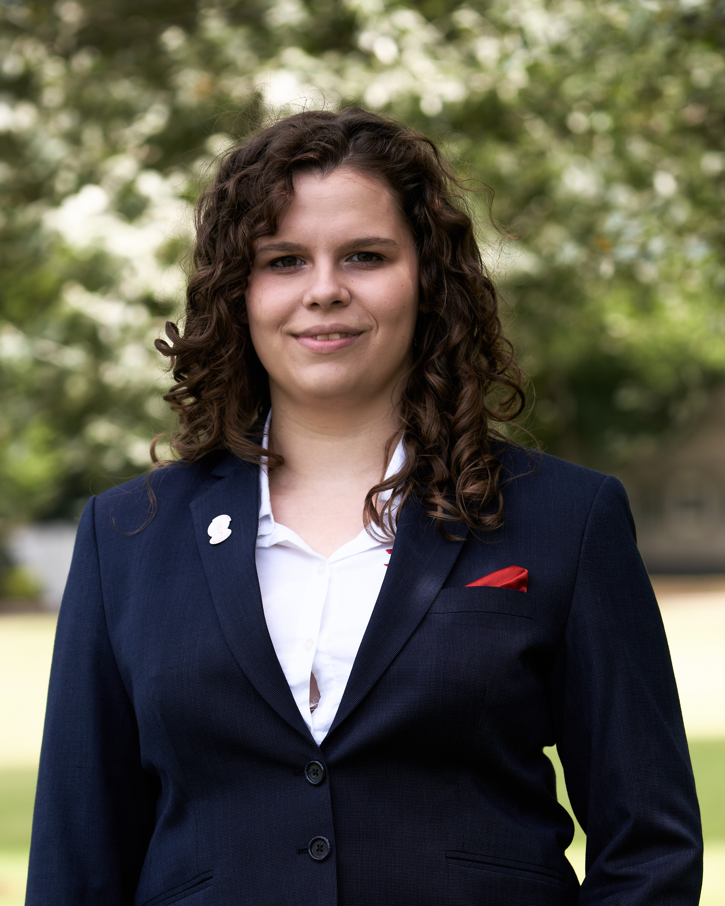

Jessie van Nuenen

About me
I'm Jessie, a former ICT student. I quit the field of ICT to follow my passion for primary education.
Education
- VWO, Natuur & Techniek/Natuur & Gezondheid - Eckartcollege, Eindhoven (2015-2021)
- ICT & Software - Fontys University of Applied Sciences (2021-2023)
Work Experience
-
Tutor - TopTutors
September 2021 - present
- Giving private tutoring to student of various ages and levels in multiple subjects
- Monitoring during tests and exams
- Accommodate students when teachers are ill
-
Studiebegeleider - Yeppe
February 2024 - present
- Provide exam training to last years students
Skills
- Programming: ⭐️⭐️
- Tutoring: ⭐️⭐️⭐️
- English: ⭐️⭐️⭐️⭐️⭐️
Awards and Certifications
- HBO Bachelor HBO-ICT Propedeuse bachelor (Information & Communication Technology) (July 2022)
Other